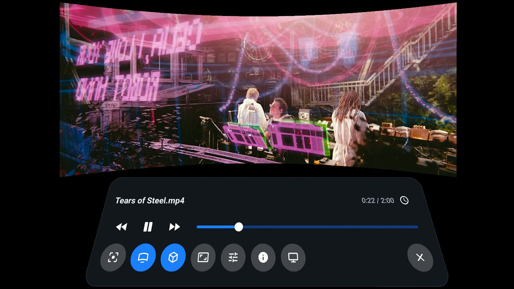
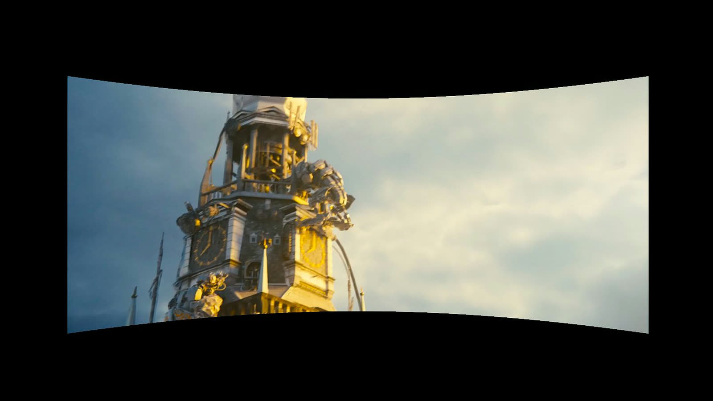
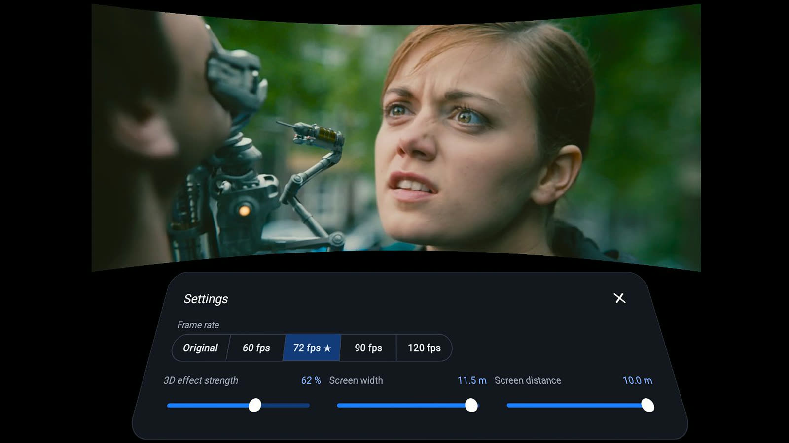
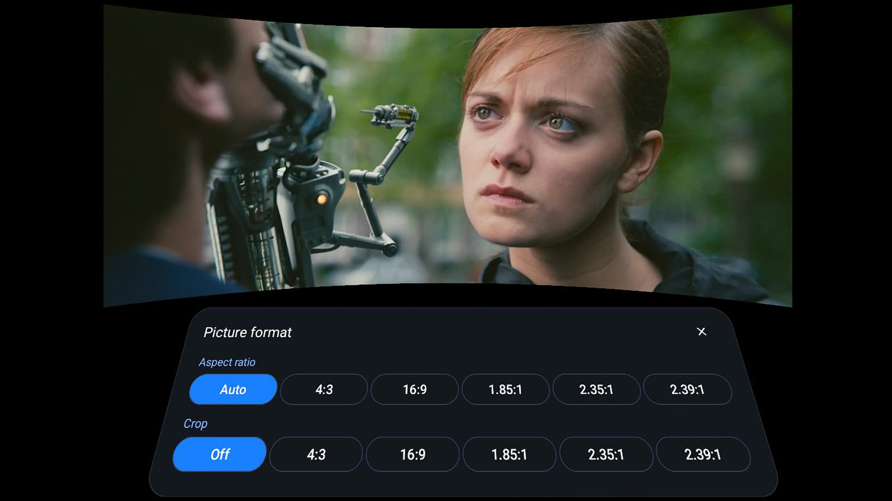
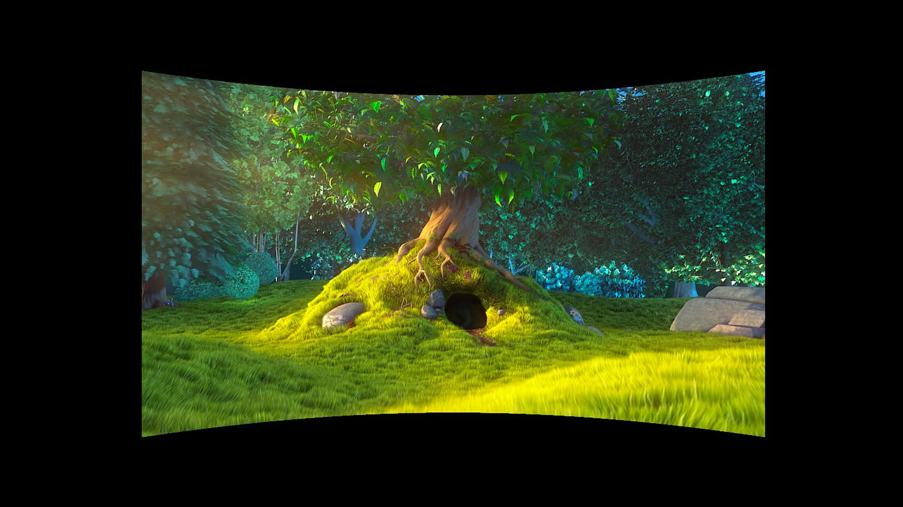

AI 2D to 3D video player for Meta Quest
Depth Player turns any video into stereoscopic 3D in real time and plays it smooth at 60 fps and beyond, on a giant VR cinema screen. Everything runs on the headset. No PC needed. Free.





Screenshots show Tears of Steel and Big Buck Bunny (CC BY 3.0, Blender Foundation, mango.blender.org / peach.blender.org).
AI 2D → 3D
An on-device depth model converts every frame of 2D video to 3D.
Stereoscopic 3D
A separate image for each eye, with natural depth and adjustable strength.
60 · 90 · 120 fps
Frame interpolation smooths 24 fps films to the headset's refresh rate.
YouTube in VR
Watch YouTube on the big screen, converted to 3D.
AI 2D to 3D converter, right on the headset
Most movies, series and clips are flat. Depth Player estimates depth for every frame with a compact AI model running on the Meta Quest GPU, then renders the picture for each eye. The result is real-time 2D to 3D conversion of any video, with no gaming PC, no pre-processing and no upload to the cloud. Depth edges follow the picture, and scene cuts and camera flashes are handled so the 3D stays stable.
Stereoscopic 3D from any video
Depth Player creates true stereoscopic 3D: the left and right eye see slightly different views, just like a 3D cinema. You choose how strong the effect is. Turn 3D off at any time to watch in 2D on the same screen.
Frame interpolation: smooth 60 fps and higher
Films are shot at 24 frames per second, which judders on a VR display. Depth Player generates the in-between frames with motion-compensated frame interpolation (motion smoothing), so pans and action scenes play at 60, 72, 90 or 120 fps. Problem areas at scene cuts and very fast motion are detected and kept clean.
VR video player and virtual cinema
- Flat or curved screen up to 12 m wide and 10 m away. Grab and move it with the controller.
- AMD FidelityFX Super Resolution (FSR) upscaling makes 480p and 720p video sharper.
- Subtitles, audio tracks, aspect ratio and crop, go to time, resume where you stopped.
- Switch between the VR cinema and a 2D window whenever you like.
YouTube in VR, now in 3D
Open YouTube in the built-in browser and choose Watch in VR. The page fills a cinema-sized screen, you control it with the controller ray, and the video can be converted to 3D and smoothed like your own files. Bookmarks keep your favourite sites one click away.
Watch movies in VR from Plex, NAS, DLNA and SMB
- On the headset: MP4, MKV, MOV, WebM and more, powered by libVLC.
- Home network: Plex, Jellyfin, Emby and NAS media servers over DLNA/UPnP, shared folders over SMB, SFTP, FTP and NFS.
- Links: HLS, RTSP and HTTP streams, and "Open with" from other apps.
Frequently asked questions
What is Depth Player?
Depth Player is a free VR video player for Meta Quest that converts 2D video to stereoscopic 3D in real time with an on-device AI depth model, and smooths motion to 60, 90 or 120 fps with frame interpolation.
How does the AI 2D to 3D conversion work?
A compact AI depth model (ZipDepth) estimates depth for every frame on the Quest's own GPU. Depth Player then renders a separate image for each eye with occlusion handling and temporal stabilisation, giving stereoscopic 3D from ordinary 2D video.
Can Depth Player play video at 60 fps?
Yes. Motion-compensated frame interpolation turns 24 and 30 fps video into smooth 60, 72, 90 or 120 fps playback, matched to the headset's refresh rate, with protection against artifacts at scene cuts and fast motion.
Does Depth Player need a PC?
No. 2D to 3D conversion, frame interpolation and upscaling all run on the headset. There is no PC, cloud or streaming software involved.
Can I watch YouTube in VR and in 3D?
Yes. Open YouTube in the built-in browser and choose Watch in VR. The page appears on a giant virtual screen, and the video can be converted to 3D and smoothed like any other video.
Which video sources does it play?
Files on the headset (MP4, MKV, MOV, WebM and more via libVLC), Plex, Jellyfin, Emby and NAS media servers over DLNA/UPnP, SMB, SFTP, FTP and NFS shared folders, HLS and RTSP stream links, and web video.
How is Depth Player different from SVP or Owl3D?
SVP (Smooth Video Project) interpolates frames and Owl3D converts 2D to 3D, but both run on a PC. Depth Player does both in real time on the Meta Quest itself, inside a VR cinema.
Can it convert Netflix or Prime Video to 3D?
No. Copy-protected (DRM) streaming video can't be processed by any app. Depth Player converts your own files, network media and unprotected web video such as YouTube.
Which headsets are supported?
Meta Quest 3 and Quest 3S are recommended. Quest Pro and Quest 2 are supported.
Is Depth Player free?
Yes. It has no ads, no accounts and no tracking.